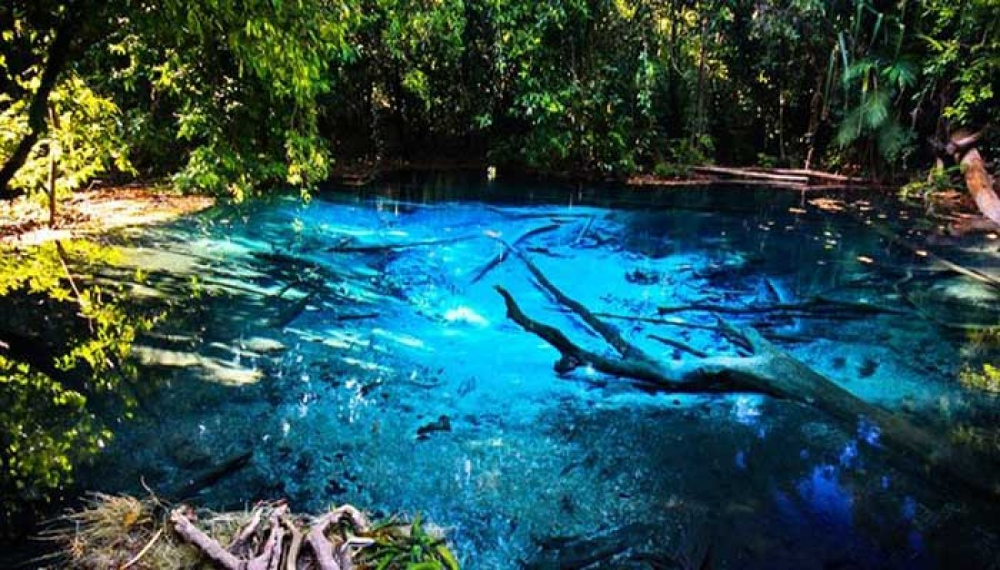

Let me show you the beauty of Jambi
Gentala Arasy
Gentala Arasy is a cultural museum which is popular as a symbol of Islam in Jambi City. The Museum Tour in Jambi is home to hundreds of collections of historical objects that have witnessed the journey of Islam in Jambi. These collections were obtained from scholars who donated them, bought them, or borrowed them from several institutions.
You can take a walk while looking at the evening or night views on a bridge built near tourist attractions in Jambi, the Gentala Arasy Bridge. The bridge, which was built with a budget of eighty eight billion rupiahs, has a famous view that is amazingly beautiful decorated with lights at night.
Location: Arabic Melayu, Pelayangan, Arabic Melayu, Pelayangan, Jambi City, Jambi
Operational Hours: Monday-Friday 8.00-16.00; Saturday-Sunday 8.00-13.00
Ticket Prices: IDR 1,500 for children and IDR 2,000 for adults
Jambi Paradise
Jambi Paradise is one of Jambi's tourist attractions in the form of a water park that you can visit in Jambi City. Not only does it provide a place to play water, you can also take a leisurely walk with a beautiful view .
If you choose to relax with your family, Jambi Paradise could be one of the most popular and favorite Jambi tourist attractions for you.
Location: Desa Talang Belido Kebon IX, Simpang Acai, Sungai Gelam, Mekar Jaya, Sungai Gelam, Jambi City, Jambi
Operating Hours: 10.00 - 18.00
Ticket Price: IDR 20,000 for weekdays and IDR 30,000 for holiday
Sigerincing Waterfall
If You longs for natural nuances and the roar of a calming waterfall, Sigerincing Waterfall is the answer. This famous Jambi tourist attraction which includes natural tourism provides a natural waterfall atmosphere. You can swim or just play water with your friends or family at this tourist spot.
Location: Tuo, Lembah Masurai, Merangin Regency, Jambi
Operating Hours: 24 Hours
Ticket Price: Free
Mount Kerinci
Mount Kerinci is a famous volcano with the highest peak in Indonesia. This mountain is also the second highest mountain in Indonesia after Jaya Wijaya in Papua.
This tourist attraction in Jambi offers a cool atmosphere and stunning morning views.
Make sure you don't forget to do a summit attack in your hiking activities! Because the view of the sunrise at Puncak Kerinci will be an unforgettable moment.
Location: Jambi Province Border with West Sumatra
Operating Hours: 24 Hours
Ticket Price: Free
Telago Biru

From the name, Toppers must have known about the sights that will be presented by this natural Jambi tourist spot.
Telago Biru is a small lake located in Merangin Regency. The scenery looks beautiful and soothing. This fits into a list of the famous and favorite Jambi tourist attractions.
Location: Tanjung Alam, Sungai Tenang, Merangin Regency, Jambi.
Operating Hours: 24 Hours
Ticket Price: Free
Lake Kaco
Kerinci still has stunning natural charm in the tourist attractions of Lake Kaco. This lake is located in the area of Mount Kerinci and provides beautiful and beautiful natural scenery.
Location: Dusun Baru Lempur, Gunung Raya, Kerinci, Jambi
Operating Hours: 24 Hours
Ticket Price: Free